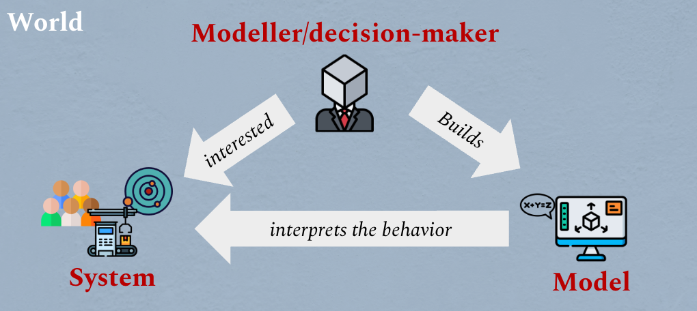
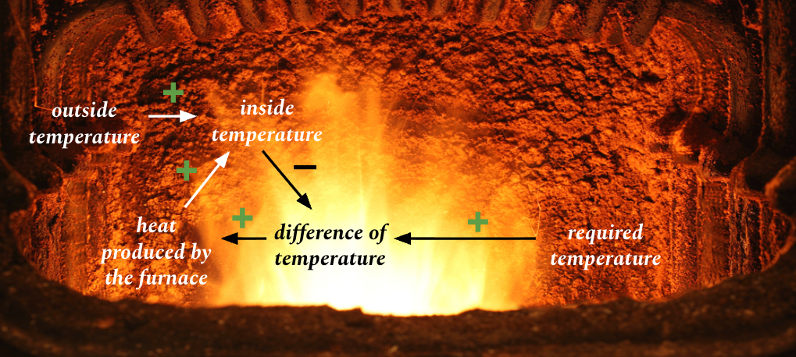
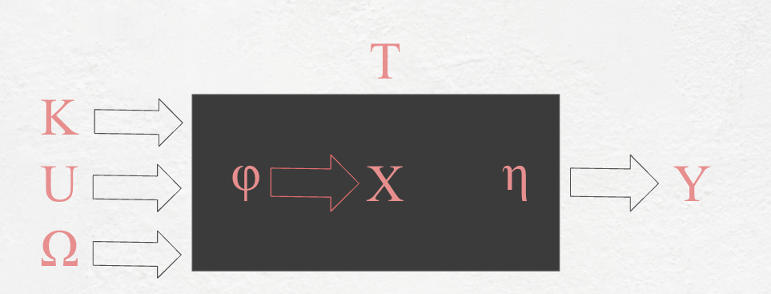
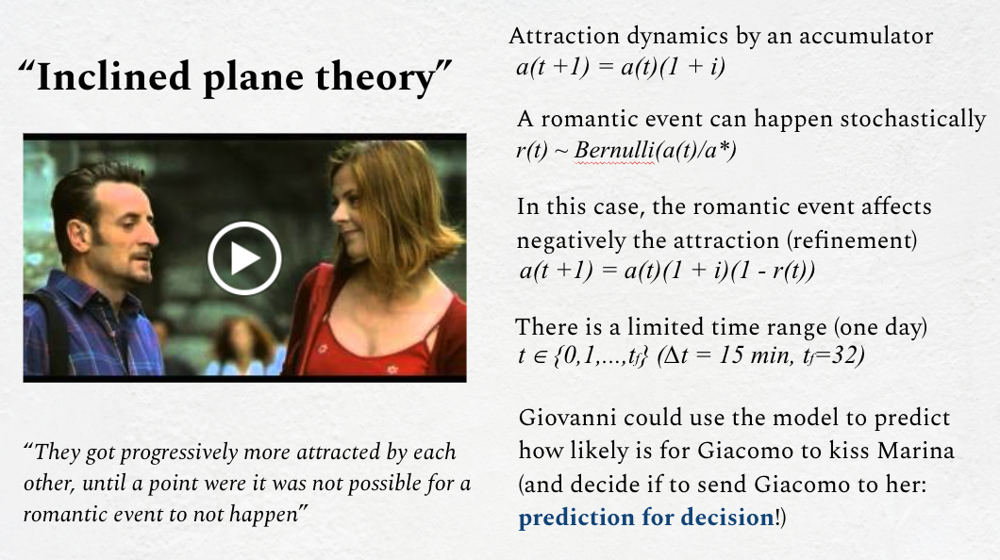
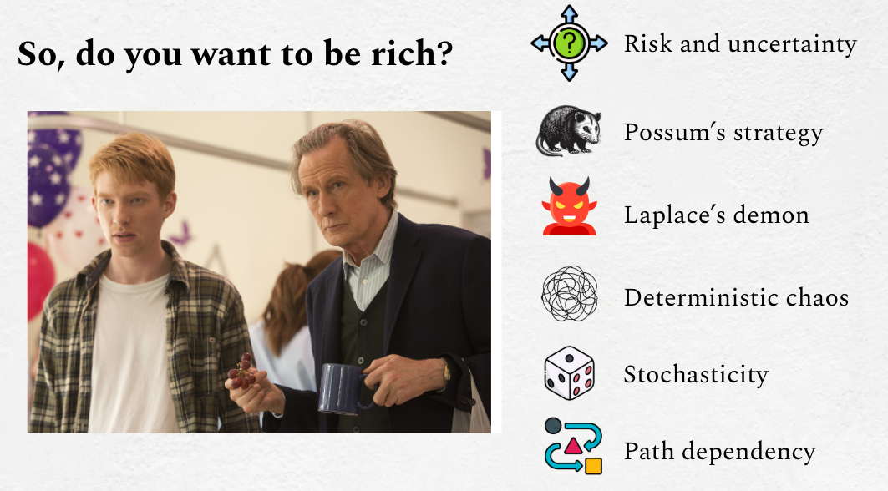

Dynamical System Design is an universitary course held for the master's student of management engineering of LIUC University on how to use formal models for decision-making in complex contexts.
It combines intuitive system thinking, basic mathematics, and simulation practice with an ad hoc software simulator to turn qualitative reasoning into operational decisions.
The course perspective is practical: models are not built for elegance alone, but to support decision-making,
clarify assumptions, and run what-if and scenario analyses in uncertain dynamics environments.
Course Principles
Purpose-driven modeling
Progressive refinement
Prediction for decision

The modeler defines a system boundary, builds a model, and interprets behavior to support action.
From Craft To Engineering
A central principle is moving from ad-hoc decision habits to explicit and repeatable engineering logic.
The course contrasts "the craftsman" approach with a structured modeling approach that can be discussed,
transferred, and improved collaboratively.
Complexity Is Managed, Not Removed
The course distinguishes complication from complexity: complication can be reduced by better representation,
while complexity is a real property of systems. The task of the modeler is to choose the right abstraction level.
Qualitative First, Quantitative Next
Modeling starts with variables and dependencies, then evolves toward equations and simulation.
This phased method makes assumptions explicit before numerical formalization.
Validation And Sensitivity
A model is useful only if it behaves coherently under alternative scenarios.
The course emphasizes validation, what-if analysis, and sensitivity analysis as core quality criteria.
The course repeatedly frames decision-making as an engineering discipline, not only a personal craft.
Topics Covered
System boundaries, purpose definition, and modeling hypotheses.
Qualitative modeling with graphs, feedback loops, and monotone relations.
Transition to quantitative models: inputs, states, outputs, finite differences, and time-step reasoning.
Model specification with the 8-tuple and black-box/open-system classifications.
System Dynamics patterns, queueing logic, and automata-based viewpoints for discrete systems.
Scenario analysis and sensitivity analysis for robust decision support under uncertainty.

Example of signed qualitative dependencies used to reason about feedback and control.

Formal system specification with time, inputs, states, transition function, and outputs.
Examples Discussed During The Course
Direct And Inverse Problems
Beer-keg and inventory-style exercises are used to show the difference between estimating outputs
and searching for input conditions that achieve a target outcome.
Forecasting Under Partial Observability
Cases like penalty-kick prediction illustrate how behavior can be inferred from output histories,
with probabilistic reasoning and black-box thinking.
Socio-Technical Decision Cases
Urban dynamics, epidemiological reasoning, queueing in emergency contexts,
and competitive market analogies show how models inform policy and managerial trade-offs.

A playful but formal case translates a narrative into dynamic equations for prediction.

Risk, uncertainty, stochasticity, and path dependency as recurring decision lenses.